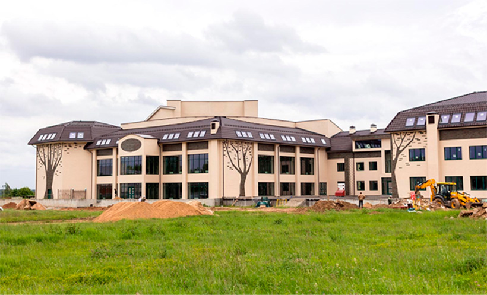

Москва
+7 (499) 348-85-65
Другой город?

На майской встрече дилеров компании Stroeher в Дилленбурге были анонсированы новинки сезона 2017-2018. Наибольший интерес гостей вызвала новая серия фасадной плитки Kontur (Контюр). - p
Клинкерная плитка Ströher Keravette Weiss 140 крепится к фасаду на компоненты от стратегического партнёра Ströher GmbH, узкоспециализированной компании STO Thermokeramik, сфокусированной на создании комплексных фасадных систем.
Важной составляющей этого, в общем, непримечательного события является то, что на сегодняшний день это крупнейший в России объект, выполненный в соответствии с широко распространённой в Германии традиционной технологией мокрого фасада.
Клинкерная плитка Ströher Keravette Weiss 140 крепится к фасаду на компоненты от стратегического партнёра Ströher GmbH, узкоспециализированной компании STO Thermokeramik, сфокусированной на создании комплексных фасадных систем.
Клинкерная плитка Ströher Keravette Weiss 140 крепится к фасаду на компоненты от стратегического партнёра Ströher GmbH, узкоспециализированной компании STO Thermokeramik, сфокусированной на создании комплексных фасадных систем.
В зависимости от объекта, такие «остатки» могут быть весьма внушительного объёма, поэтому через пару лет невостребованный материал Sonderbrand реализуется любому желающему с существенным дисконтом. Это тот уникальный случай, когда отличный товар можно купить по очень привлекательной цене. «Керамик груп» имеет практику выкупать такие коллекции: их цена привлекательна, и они пользуются хорошим спросом.
Так, совсем давно мы получили две больших партии спецпродукции Sonderbrand, и что-то уже можно увидеть на нашем специализированном сайте discontceramic.ru. Заглядывайте на него время от времени, там бывает много интересных вариантов, вот только из-за ограниченного объёма хранятся они недолго.